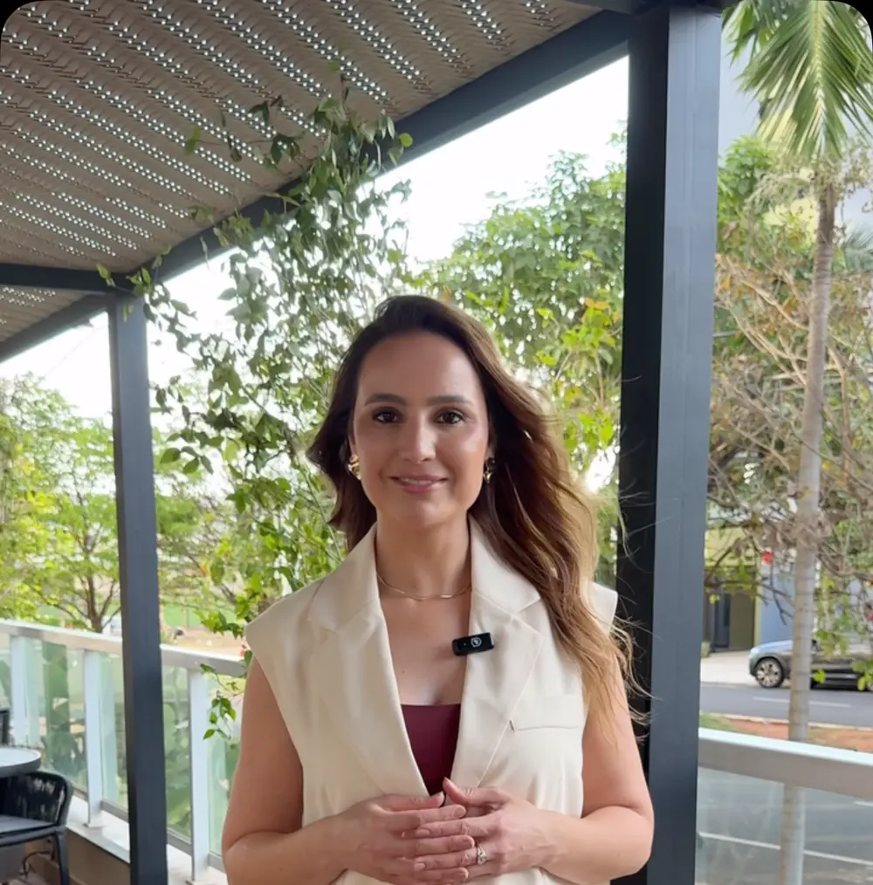
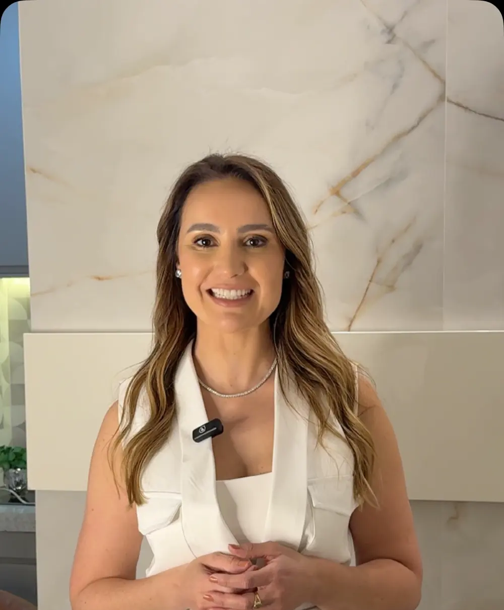
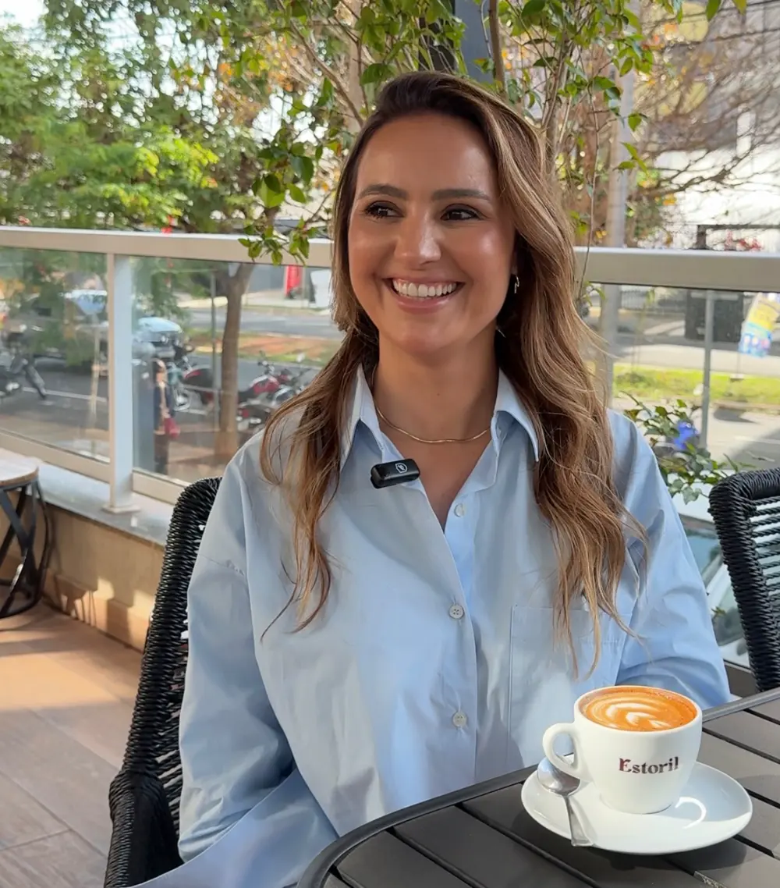
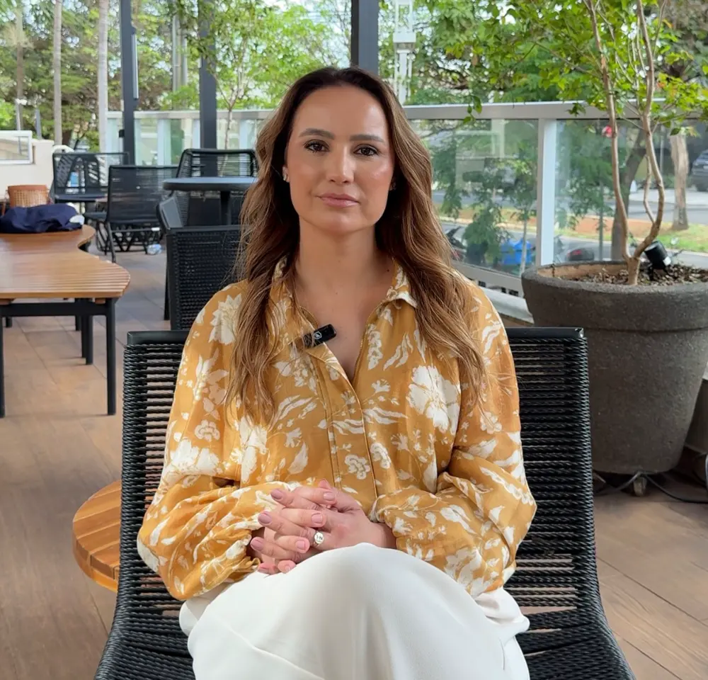
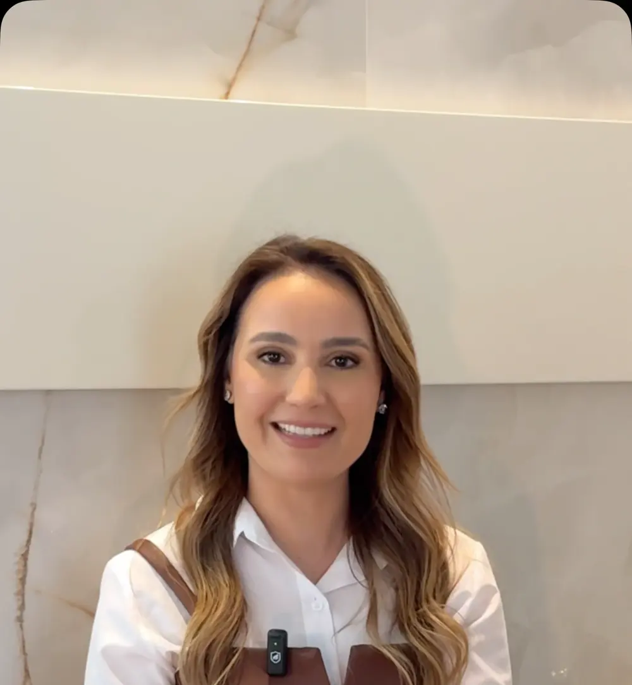

Invisalign
“No Invisalign, cada alinhador faz parte de uma sequência planejada para promover movimentações específicas nos dentes ao longo do tratamento.”
ler o postArte ilustrativa · não é foto do consultório
São José do Rio Preto · SP
Ortodontia, odontologia, Invisalign e harmonização orofacial.
Invisalign
“Parece apenas uma placa transparente, né? Mas existe um tratamento ortodôntico inteiro acontecendo ali.”
O propósito
“Resultados naturais, responsáveis e que façam sentido para cada paciente.”
Muito prazer
“Ortodontia, odontologia, invisalign e harmonização orofacial caminham por aqui com o mesmo propósito: buscar resultados naturais, responsáveis e que façam sentido para cada paciente.” ver o vídeo

Como ela conduz
Meu papel não é simplesmente executar um pedido, mas avaliar, orientar e mostrar com clareza o que realmente pode te trazer um bom resultado.
— Dra. Ana Paula Trombin · ler o post
Antes de qualquer tratamento, existe uma etapa indispensável:
“A naturalidade vem do resultado de conhecimento e planejamento.”
Arte ilustrativa · não é foto do consultório




Tratamentos
“No Invisalign, cada alinhador faz parte de uma sequência planejada para promover movimentações específicas nos dentes ao longo do tratamento.”
ler o post“Na fase adulta, a ortodontia pode ajudar a corrigir desalinhamentos, melhorar a mordida (oclusão), facilitar a mastigação, higienização e trazer mais equilíbrio para o sorriso.”
ler o post“Na infância, uma avaliação ortodôntica por volta dos 5 anos pode ajudar a observar como a mordida, os dentes e a face estão se desenvolvendo, sem significar, necessariamente, que a criança precisará usar aparelho naquele momento.”
ler o post“Harmonização facial é muito sobre saber observar. Entender proporções, características, movimentos e necessidades.”
ler o post“Quando existe indicação para trabalhar firmeza e sustentação, o ultrassom focalizado pode ser uma ferramenta importante dentro do planejamento.”
ler o post“O objetivo é provocar um estímulo controlado, capaz de iniciar os processos de reparação e remodelação da pele.”
ler o postNas palavras dela
01“Tecnologia nenhuma substitui diagnóstico.”
sobre Ultraformer
02“A discrição é uma das vantagens, mas quem conduz o tratamento é a Ortodontista, junto com a colaboração de uso do paciente.”
sobre Invisalign
03“Dependendo do caso, a melhor indicação é fazer diferente, ou fazer menos, ou até não fazer agora.”
sobre a avaliação
04“Não se trata de ‘agredir para estimular colágeno’. Trata-se de saber quanto estimular, onde estimular e como conduzir essa pele depois do procedimento.”
sobre microagulhamento
05“Na Ortodontia, mais importante do que tratar cedo ou tarde é saber avaliar no momento adequado.”
sobre acompanhamento
06“Tratar ‘flacidez’ sem entender sua origem é tentar corrigir o efeito sem investigar a causa.”
sobre flacidez
07“Muita gente passou anos acreditando que aparelho era ‘coisa de adolescente’.”
sobre ortodontia adulta
Para o fim de ano
“O resultado que você deseja para dezembro pode precisar começar a ser planejado em novembro.”
“Nem todos os procedimentos entregam resultados imediatos. Alguns precisam de dias para acomodação, outros exigem um período de recuperação e há tratamentos cujos efeitos aparecem gradualmente, ao longo de semanas ou meses.” ler o post
Dúvidas
Cada resposta é um trecho publicado pela Dra. Ana Paula no Instagram.
“Não é simplesmente colocar uma placa e esperar o sorriso alinhar. Existe diagnóstico, planejamento, acompanhamento e ajustes de acordo com cada caso.” post
“O tratamento ortodôntico pode terminar, mas o acompanhamento do sorriso, não necessariamente. Os dentes continuam sujeitos a movimentações ao longo da vida e é justamente por isso que a contenção e as avaliações periódicas têm um papel tão importante na manutenção do resultado.” post
“Antes de qualquer tratamento, existe uma etapa indispensável: avaliação, planejamento e indicação individualizada. A naturalidade vem do resultado de conhecimento e planejamento.” post
“Mais profundidade, mais vermelhidão ou até sangramento não significam, necessariamente, que a pele foi melhor tratada.” post
“O Ultraformer pode fazer muito sentido para determinados pacientes e não ser a resposta principal para outros. Antes de escolher o aparelho, precisamos entender o que está produzindo aquela mudança que você vê no espelho.” post
Siga no Instagram

@draanapaulatrombin
Os vídeos dela explicando cada tratamento estão no perfil oficial.
Abrir o perfilAgende sua avaliação